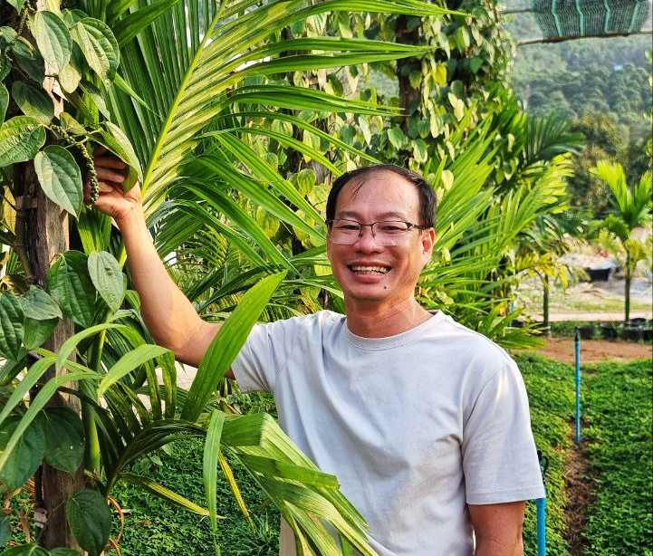

We Hire Locally
Secret Lake House is built to support the community around Secret Lake by creating meaningful work in hospitality, dining, and guest service.

About Secret Lake House
A boutique hospitality destination at Secret Lake creating local jobs through professional training, authentic Khmer design, and sustainable tourism.
Kimlay's story
Between 2016 and 2024, Kimlay helped lead sustainable agriculture in Kampot while managing one of the region's first organic-certified pepper farms. At Secret Lake House, that connection to the land now meets his family's culinary roots.
Born into a family of restaurateurs from Siem Reap, Kimlay brings a deep respect for Cambodian cooking, warm hosting, and honest ingredients. His family's kitchen talent continues on the national stage, with his sister reaching the Top 10 of MasterChef Cambodia 2025.
With a wealth of experience in community development and professional tourism, Kimlay is the heart of our hospitality. Having spent years managing volunteer programs and guiding international guests, Kimlay brings a deep local perspective to every journey.

Kimlay blends love for the land with a passion for Cambodian flavors, making guests feel welcome, relaxed, and connected to the place.
Training Center
Secret Lake House is built to support the community around Secret Lake by creating meaningful work in hospitality, dining, and guest service.
The training program helps students and local team members develop professional skills they can carry into long-term tourism careers.
Our goal is tourism that feels personal, respectful, and rooted in local culture rather than separated from the community around it.
Dining philosophy
Secret Lake House is more than a place to stay. It's a place to slow down, connect, and enjoy good food.
Our menu reflects this philosophy, with thoughtfully prepared dishes, honest flavors, and a focus on quality ingredients cooked with care.
Guests come for the lake, the pool on the lake bank, the poolside restaurant, the 1.2m-wide bridge to three wooden overwater huts, the Bamboo Hut, and the quiet of the valley. They remember the feeling of being welcomed into a place with real roots.


Our story on video
Watch scenes from the lake, the team, the garden, the pool, and the countryside that shape our way of hosting.
Secret Lake, Kampot
Secret Lake House brings together boutique accommodation, overwater dining, local training, and Kampot pepper heritage in one peaceful lakeside destination.
Message Us on WhatsApp